How TheReceptionist held a 98.9% customer satisfaction score and protected its Radical Support reputation with a fully managed xFusion team.
TheReceptionist for iPad has been one of the most widely used visitor management systems in the world since 2013. The product runs in over 5,500 offices across more than 35 countries. It handles visitor logging, two-way communication over SMS and email, badge printing, and custom check-in workflows for everyone from a single-location office to a multinational with thousands of employees.
In 2020 and 2021, TheReceptionist shipped contactless check-in so its customers could keep welcoming guests without putting anyone at risk. That instinct, ship the thing the customer needs the moment they need it, is the same instinct that built the rest of the company.
Two ideas hold the place together. The first is Radical Support, the company’s name for the kind of customer service that goes a step further than anyone expects. The second is Employee Supremacy, an internal operating model built on the belief that taking great care of employees is what produces great care for customers. Those are not slogans. They are how the company hires, how it trains, and how it talks about itself.
When we first met with Jim and David, we were immediately struck by their values and commitment to their employees, which meshed with ours completely. Over years of working together they\u2019ve helped us hit a 98.9% CSAT rating, and we\u2019ve expanded the partnership several times. If you\u2019re looking for an outsourced solution, I highly recommend the team at xFusion.
TheReceptionist had built a reputation that most software companies envy. Customers loved the product, but they loved the support even more. Radical Support was not a marketing line. It was the lived experience customers got when they reached out, and it was a real piece of why the company kept growing.
That reputation also meant the company had something to lose.
When TheReceptionist decided to outsource part of its customer support and sales work, the leadership team was clear-eyed about the risk. Outsourcing carries baggage. It carries stories about scripted replies, about reps who do not understand the product, about agents treating customers like tickets to close instead of people to help. The wrong partner would not just miss the bar. The wrong partner would erode something the company had spent years building.
There was a second piece, harder to write into a contract. TheReceptionist runs on Employee Supremacy. The premise is that you cannot fake great customer care. It comes out of how the company treats the people doing the work. Most outsourced shops run the opposite model. They treat their agents as interchangeable, pay them poorly, churn through them, and pass the consequences back to the client.
So the search was not really for a vendor. It was for a partner whose internal operating model resembled TheReceptionist’s own. A partner that took care of its people the way TheReceptionist takes care of its people, because the math only works if both sides do. If that partner did not exist, the company was prepared to keep the work in-house indefinitely.
The first conversation was the test, and Tom remembers it. Jim and David showed up talking about how they treat their team and why. The values matched on the first call.
From there xFusion did the work that earned the partnership.
The team studied TheReceptionist before placing anyone. xFusion went deep on the company’s culture, on how Radical Support actually showed up in real customer conversations, on what Employee Supremacy looked like from the inside, and on what TheReceptionist’s customers had come to expect. The training was not generic onboarding. It was built around teaching xFusion’s team members how to be part of TheReceptionist.
To keep the partnership tight day to day, xFusion opened a two-way Slack channel. That channel was not a status board. It was a working space, where TheReceptionist could give feedback in the moment and xFusion could surface what it was seeing in the queue. Adjustments happened in hours, not weeks.
The rollout itself was phased. TheReceptionist was not asked to hand over the keys on day one. The integration moved a step at a time so the team could watch the quality of every customer interaction and confirm the standard was being held before scope expanded.
The KPIs reflected the same thinking. Customer satisfaction and reply time were tracked. So were employee satisfaction and cultural fit on the xFusion side, because both companies believed the second set of numbers was upstream of the first. The whole approach was built to disprove a stigma. Outsourced did not have to mean diluted. With the right partner, it could mean better.
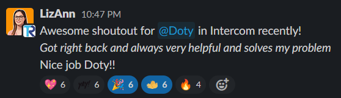
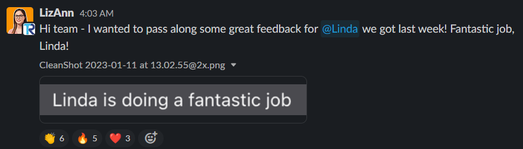
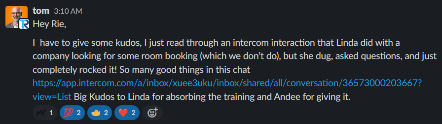
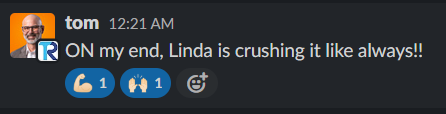
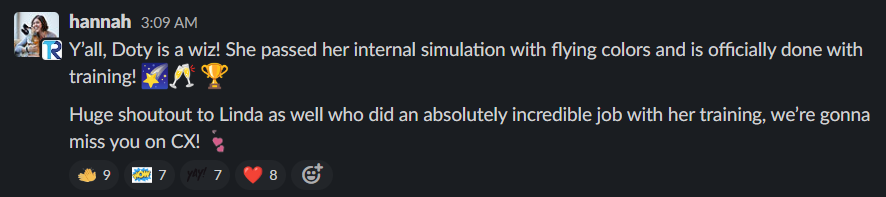
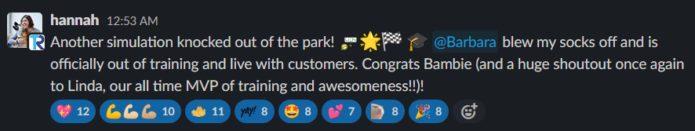
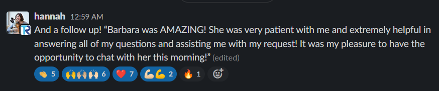
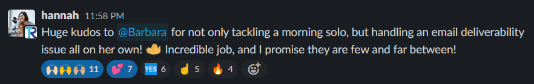
TheReceptionist’s customers do not know they are writing to xFusion. They think they are writing to TheReceptionist. That is the point. And the names of xFusion team members keep showing up in customer feedback by name.
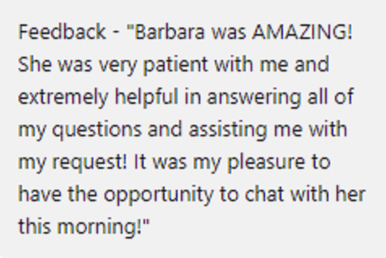
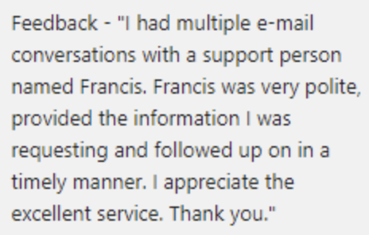
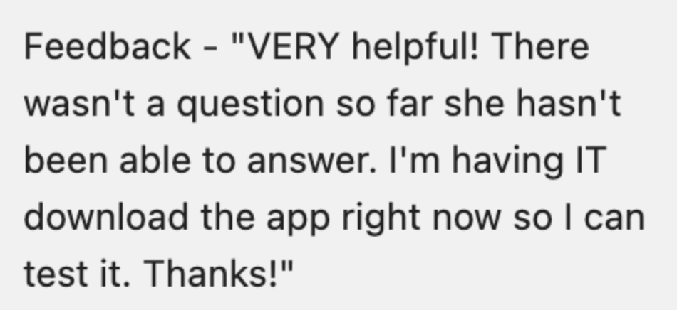
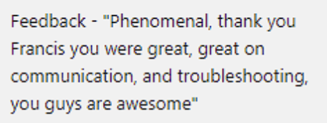
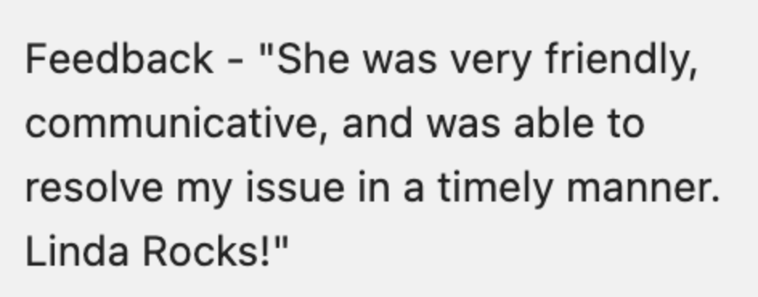
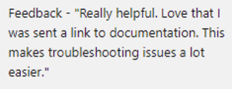
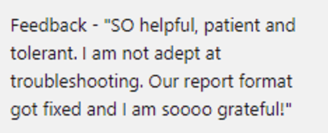
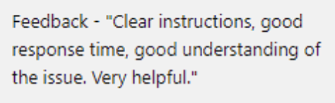
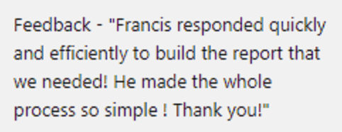
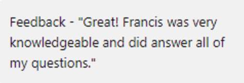
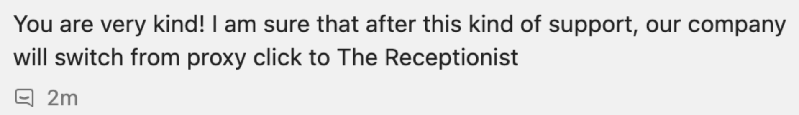
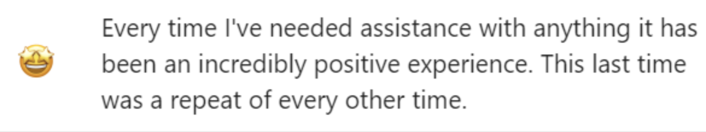
The numbers landed where the values pointed.
xFusion cleared TheReceptionist’s stated 85% customer satisfaction bar by nearly 14 points, holding at 98.9%, and posted a perfect 100% customer satisfaction score in the majority of months since the partnership began. Average first reply time settled at 1 minute and 22 seconds, consistent with the benchmark TheReceptionist had set internally before xFusion came in, and held across higher volume. Initial ticket volume sat around 63 conversations. By March and April of 2023 the team was handling a peak of 375 tickets a month without the quality numbers moving. Reopened tickets stayed minimal, because customers got a clear answer the first time, with relevant articles attached and the right context, so the queue did not double back on itself.
The clearest qualitative signal was that customers kept thanking individual xFusion team members by name. When a customer writes in to compliment a specific person, they are not thinking about an outsourced vendor. They are thinking about the company they trust. That was the bar TheReceptionist had set for itself, and the xFusion team kept clearing it.
The partnership has run for years and continues today. TheReceptionist has expanded the relationship several times, bringing on additional contract positions across support and sales as the work has grown. With the front line in trusted hands, TheReceptionist’s internal team has been able to shift attention back to the product work and internal projects that needed it.
If you have built a customer experience that customers actually talk about, and you are nervous about handing any of it to an outside team, that is the exact problem we solve. We will recruit, vet, place, train, and manage a senior, AI-trained support agent for your business. You will work with them for 30 days before paying anything. If you are not happy, you walk away free.
30 minutes. No commitment. No credit card. You\u2019ll talk directly with our founding team.